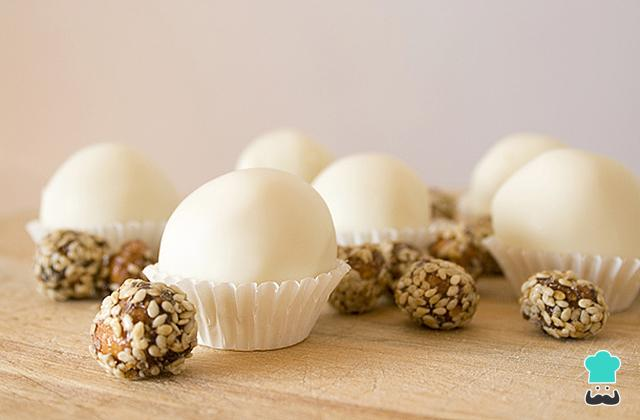

Cajetas

Cajetas (Milk Fudge)
Ingredients
- 800 grams of powdered milk
- 1 can of condensed milk
Instructions
- Take a bowl and add half of the powdered milk and half of the condensed milk. Start mixing with a spoon or spatula.
- Once they are integrated, add the rest of the powdered milk and condensed milk and continue mixing until you obtain a dough that does not stick to your fingers.
- Once the dough is obtained, form shapes with molds or make small balls. If desired, you can add peanuts to the milk fudge or cover them with grated coconut. Leave them in the refrigerator for approximately 5 minutes if they are a bit liquid, or at room temperature.
Servings
15-20 cajetas
Back to Recipes